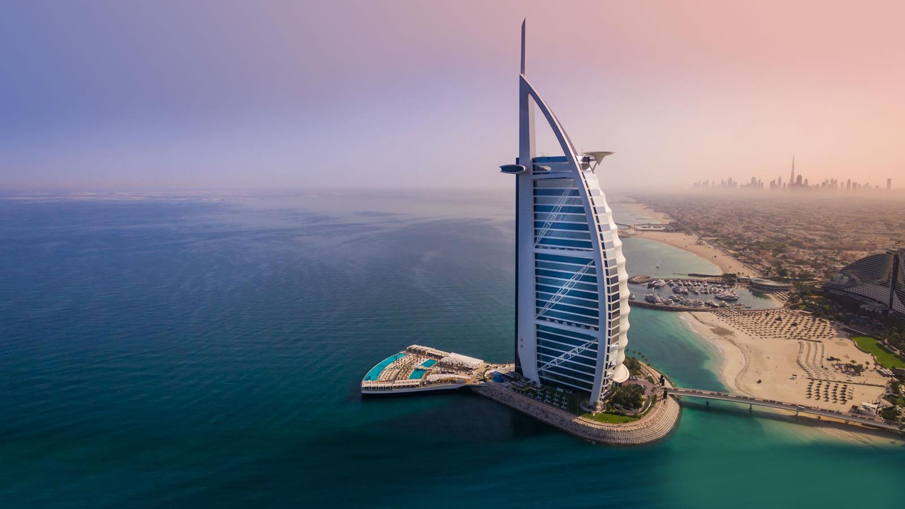
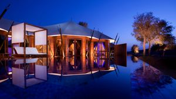
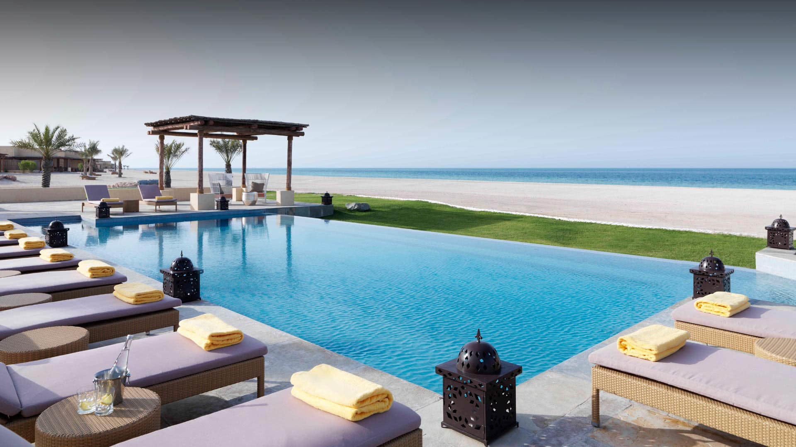
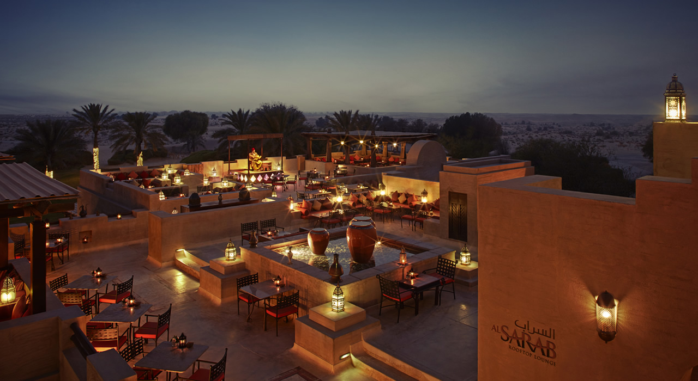

Style: Super Luxury
Built: 1994

In its relatively short tenure on the Dubai coastline this legendary and symbolic hotel has attracted international attention and awe, ensuring its place as one of the most photographed structures in the world, and consistently voted the worlds most luxurious hotel. Designed to resemble a billowing sail, Burj Al Arab soars to a height of 321 metres, dominating the Dubai skyline. Illuminated at night by choreographed lighting representing water and fire – Burj Al Arab is simply individual, inspired, impressive.
This all-suite luxury hotel in Dubai reflects the very finest that the world has to offer. With a discreet in-suite check-in, private reception desk on every floor and a brigade of highly trained butlers, you can be assured of the ultimate in personal service throughout your stay. Upgrade your experience at Burj Al Arab with your chauffeur driven Rolls Royce.
Style: Classic Luxury
The Emirates Palace Hotel Abu Dhabi is an enchanting landmark that's a wonder to behold for all who venture through its magnificent gates. Fairytales come to life as your
senses are treated to an extraordinary and unforgettable experience. Breathe the air of luxury that fills every corner of this serene paradise.
Feel the promise of a majestic experience fit for a king and deserving of an emperor. The Palace boasts 302 superior rooms and 92 magnificent suites each combining the
ultimate in luxury with 22nd century technology.
Palace Conference Centre is the most luxurious and technologically advanced meeting facility in the region. The conference facilities include an auditorium with seating for 1200 guests, a main ballroom that can accommodate up to 2800 persons and an extensive range of 48 meeting rooms including a Media Centre and Business Centre.
In addition, six large terraces and a variety of pre-function areas provide many possibilities for breaks, cocktail receptions and banquets. Set on 100 hectares of beautifully landscaped park with several open lawns, Emirates Palace offers spectacular outdoor venues for gala dinners and creative events.
State-of-the-art technology is also present in all meeting and function rooms and each comes fully equipped with a projector, motorized screen, plasma screens, microphones, audio-visual systems, wireless and wire data systems, special sound system, video conferencing system, IP camera and broadcast camera connectivity.An oasis of comfort, when you need to relax
If camping is not really your thing, Al Maha Desert Resort & Spa in Dubai Desert Conservation Reserve takes glamping to another level, with luxury tented-style villas, each
featuring its own private infinity pool.
It's a place for relaxation rather than risk-taking, with a number of chilled activities on offer, the highlight being the sunset camel rides over the rolling dunes, where you can enjoy a beverage as you take in the uninterrupted views. Ask for a villa overlooking one of the natural oases, where you can watch gazelles and Arabian oryx stop in for a drink.
Style: Classic Luxury
Built: 2010

Amid stretches of desert sand in tranquil Wadi Khadeja, the protected enclave of the evergreen ghaf tree, lies the exclusive resort of Al Wadi Desert, Ras al Khaimah,
a Ritz-Carlton partner hotel.
Al Wadi Desert, Ras al Khaimah is the first desert resort in the United Arab Emirates to offer an all-pool villa concept, complete with 3,960 sqm of Asian-inspired hydrotherapy spa facilities, a dedicated nature reserve, a private beach club and an 18-hole championship golf course. This oasis of indulgence spans over 100 hectares, of which 60 hectares are dedicated as a nature reserve – home to local desert wildlife such as Arabian gazelles, camels and oryxes, offering guests a unique opportunity to interact with and observe these gentle creatures up close.
Style: Classic Luxury
Built: 2013
Imagine a unique destination set on a man-made marvel on the Dubai coastline that entices one and all with a distinct blend of serenity and splendor. Offering an urban
escape, Anantara Dubai The Palm Resort & Spa is a wondrous place where a decadent experience awaits at a luxury beach resort unlike any other.
Perched on the eastern crescent of the iconic Palm Jumeirah, an archipelago of islands connected to the mainland, Anantara Dubai The Palm Resort & Spa is a remarkable resort inspired by traditional Thai architecture in an Arabian setting. A 45 minute drive from Dubai International Airport and within easy reach of a plethora of exciting attractions including Adventure Water Park, Mall of the Emirates, Ski Dubai and Dubai Marina, this resort is where one can savor moments of bliss surrounded in unimaginable magnificence.
Designed with true Asian flair, Anantara Dubai The Palm Resort & Spa offers enchanting beach side accommodation, complemented by cuisine from Asia, the Mediterranean as well as Australia served at four specialty venues. Unwind in one of three turquoise swimming lagoons, enjoy a session at the tennis courts or gyms, or indulge yourself with a choice of treatments at Anantara Spa. The resort also has a ballroom, six meeting rooms, a kids club and teens club, all adding to the splendor of this idyllic beach side resort destination on the Palm in Dubai.
Style: Boutique/Design

Embrace the sunlight warming your skin, as endless shimmering sea fills your view from the white sandy shores of Sir Bani Yas Island, a natural sanctuary in the Arabian
Gulf. Embark on a morning wildlife drive, catching glimpses of elegant flamingos framing the mangrove lagoon.
Anantara Al Yamm Villa Resort has been built with sustainable design features perfectly complementing the island’s delicate ecosystem. Inspired by traditional Arabic fishing and pearl diving villages and their barasti lodging, these luxury villas in Abu Dhabi offer luxury amenities in a private setting with unmatched comforts. Find tranquillity at Anantara Spa; relish exceptional Italian inspired dining and experience a wide array of activities set against a backdrop of an island paradise. Designed with couples in mind, Al Yamm Villa Resort is a haven of tranquillity. To ensure peace for other guests, our beachfront resort is pleased to welcome families with children aged 12 years and above.
Style:Classic Luxury

Emerging from the heart of the desert, Bab Al Shams Desert Resort and Spa is an elegant desert resort in a traditional Arabic fort setting. Located just 45 minutes
from Dubai International Airport, the Resort features 115 rooms and suites appointed in traditional Gulf decor, complimented by the region's first authentic open-air Arabic
desert restaurant, and a superb range of recreational facilities. For those seeking a unique desert experience within easy reach of Dubai, Bab Al Shams Desert Resort and
Spa presents the ideal destination. Offering the ultimate in comfort and entertainment, at Bab Al Shams your experience will be enhanced by history, splendour and
magnificence. Located in charming clusters of sixteen double storey buildings, choose from a selection of luxuriously spaced One-Bedroom Suites, Junior Suites and Deluxe
Rooms - many with either a balcony or terrace. Dubai has a sub-tropical, arid climate. Sunny blue skies and warm temperatures can be expected most of the year. Winter
starts from November through until March. The mean daily maximum is 24 C (75 F) in January, rising to 41 C (106 F) in July